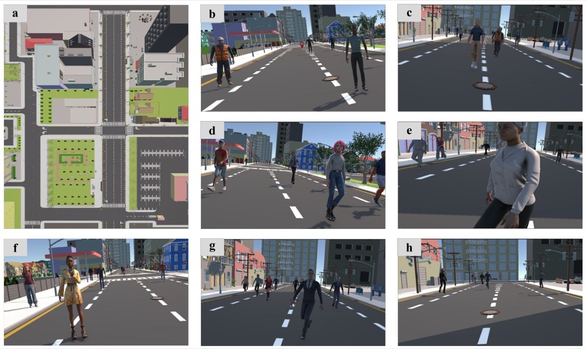

Who Feels the Crowd? Predicting Individual Cognitive Load Sensitivity to Virtual Crowds
ISMAR, conference track, 2026 Accepted
Virtual crowd simulations underpin applications from social VR to exposure therapy, yet their design rarely accounts for wide individual variation in crowd-induced cognitive demands. We investigated which virtual crowd characteristics impose the greatest cognitive load and whether distinct individual profiles predict differential vulnerability.